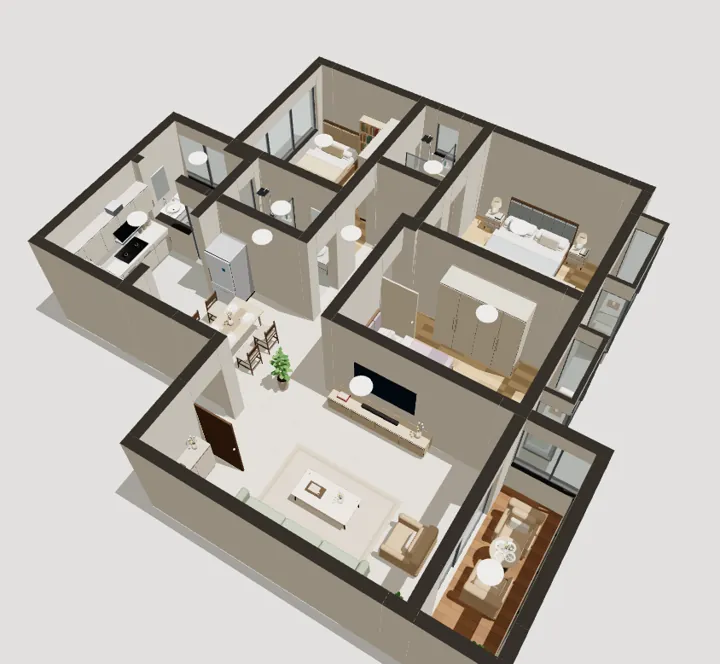

Asesor RUBIK
Sesión simulada
Consulta la vivienda de ejemplo. La conversación empieza cuando pulsas «Iniciar conversación».
Lista para iniciar
Aquí verás la respuesta a tu consulta.
Continuar por texto
Vivienda de ejemplo

Memoria en este dispositivo
Opcional. Las personas que comparten este navegador pueden ver los datos guardados.